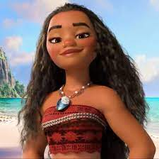
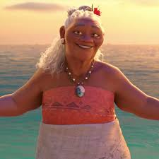
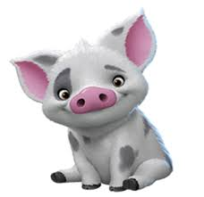
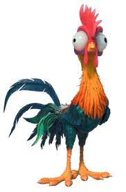
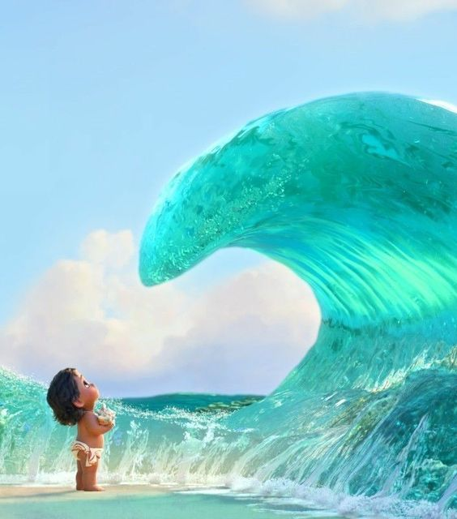

|  |
Moana |
Despite her age and size, she is considered to be fearless, intelligent, and persistent as she ventures through the ocean to change the gloomy hand of Motunui. |
Disney Wiki: Moana |
|  |
Grandma Tala |
She was able to open Moana's eyes, and restore her optimistic heart whenever she faces difficulties. Without her, Moana could've followed her Dad's wishes, thus, altering the story. |
Disney Wiki: Grandma Tala |
|  |
Pua the Pig |
Besides Moana's Grandma, Pua is one of her best supporters through the movie. Pua seems to vision Moana's capabilities better than her father ever did. Even if Pua had less scenes, his love & care for Moana still stands. |
Disney Wiki: Pua |
|  |
Heihei the Chiken |
As portrayed in the movie, Heihei is shown as a dumb and clueless rooster, who accidentally landed himself on Moana's boat. He is stressful yet funny to keep things up. |
Disney Wiki: Heihei |
|  |
Ocean |
Ocean is responsible in guiding Moana & Maui in restoring the heart of Te Fiti. With the help of Moana's personality, Ocean regarded her as "The Chosen One". |
Disney Wiki: Ocean |